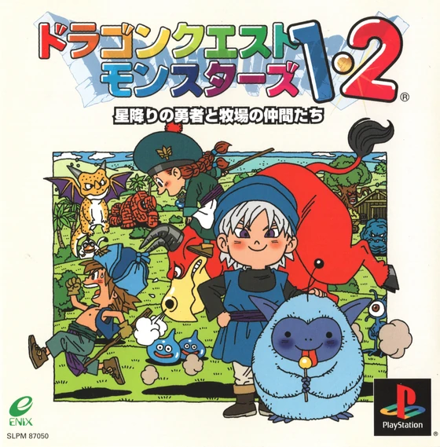
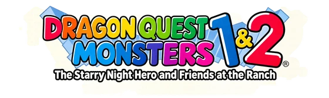

Project Discord
Ask for setup help, discuss the games, or share your playtesting notes.
Join the Discord

The Starry Night Hero and Friends at the Ranch
Play Terry’s, Cobi’s, and Tara’s adventures in English with this fan translation for the original Japanese PlayStation game.
Includes the BPS patch, matching CUE file, and README.
SHA-256 · 7,558,537 bytes
652ae16c06cc2291495b592bde5a2737e68e483879b4dc684ed4d58a56e1493a
This is an unofficial English fan translation patch for the Japanese PlayStation release of Dragon Quest Monsters 1 & 2: The Starry Night Hero and Friends at the Ranch. It covers Terry’s, Cobi’s, and Tara’s adventures.
This project was started by diethylpentane (3xad). It is a separate project from Adrikvej’s translation.
Nejimakipiyo, who also worked on DQM: Delocalized for Game Boy, is helping refine the translation. Community playtesting, reports, and suggestions continue to improve the patch. You can propose corrections through the translation comparison.
Yes. Most of the AI assistance came from Astra (ChatGPT), with help from Claude (Opus and Fable) and Grok. Google Gemini helped answer questions during development. Translation review and playtesting continue, and players can suggest corrections.
Yes. Several players have completed Terry’s adventure, and players have reported success on a range of devices and emulators. Testing of all three campaigns and different setups continues.
No. The package contains the patch, its matching CUE file, and a README. You need your own original game image and any BIOS required by your emulator.
For first-time setup, see How to install and the original BIN size and SHA-256.
Yes. The CUE’s own filename can differ from the BIN’s, but the quoted filename on its FILE line must exactly match your BIN’s filename, including .bin.
For example, if you rename the patched image to DQM-English.bin, edit that line in the CUE to:
FILE "DQM-English.bin" BINARYLeave the other CUE lines unchanged and keep both files in the same folder. Save the text file with a .cue extension, not .cue.txt, then open the CUE.
No earlier patches are needed. Each release applies directly to the clean Japanese BIN and includes the earlier translation work and fixes. Do not stack patches or apply a new patch to an already translated image.
Avoid loading save states from another patch version: they can restore old game code and bring old bugs back. A memory-card save carries your game progress without restoring that old running state.
Compare your Japanese BIN with the original disc image size and SHA-256. Use the clean Japanese image and the BPS file extracted from the ZIP. Keep checksum validation enabled and resolve the mismatch before patching.
The original Japanese PlayStation disc still contains dialogue, maps, and menu code for features that were cut or left unfinished. The patch makes those features playable again, using the Game Boy games as a reference where behavior was missing. Some details, including how often special floors appear, were reconstructed for the patch.
The Japanese disc contains 112 table conversations. The patch restores the seating interaction and matches each monster’s lines to its personality.
In Terry’s Arena dining room, bring one to three living, visible party monsters to the right-hand table. Walk onto the stool on its east side to sit down.
Revive fallen party members before sitting down. To sit again, step off the stool first.
Terry finds a room full of chests. One holds an item. Each of the others is a Mimic that attacks when you open its chest. You can leave through the exit whenever you’re ready to continue.
The forest has five connected clearings. Paths at their edges can lead back to a clearing you’ve already visited. Keep track of the openings you’ve tried and take a different path when you loop back, until you find the way down.
This is an arena inside a Travelers’ Gate. Win the opening three battles and you’ll be offered another three for a named item. Choose Yes to fight for that prize or No to finish.
Leave through the north door. If your bag was full when you earned a prize, make room and return to that door to collect it. Travel Bookmark cannot be used inside the arena.
Terry can encounter three maze layouts. Follow the corridors and backtrack at dead ends to find the way down to the next dungeon floor.
Step onto an arrow tile and it carries Terry in the direction it points. Follow the arrows ahead to see where they’ll send you, then choose where to step on. You regain control on ordinary ground and can line up your next slide toward the exit.
The Japanese game already had two-player battles, but entering the Colosseum skipped the rule menus. The patch restores those menus. Open Colosseum from the title screen and choose Free Battle, Enix Rules, or Local Rules.
Local Rules lets you set skill restrictions, total or individual level limits, allowed monster families, turns, the command timer, combos, and accessories. Set Turns to 0 for no turn limit. You can also enable monster prizes here.
The Japanese game retained the prize menus but never transferred the monster after a match. Since v1.0.73, you can turn on prizes under Local Rules in the title-screen Colosseum. Prizes are off by default.
Use saves from two different players and leave space on both farms. Each player can offer an awake farm monster outside their saved adventure party. Confirm the wager before battle. The winner keeps their own monster and receives the one the loser offered. On a draw, both players keep their monsters.
A transfer saves both Adventure Logs. Back up both saves before you wager. Keep both memory cards inserted and the game running until both saves finish. If a card error occurs, choose Retry. Resetting or losing power between saves can lose the prize monster.
Open Tactics → Movement, just below Text Speed, in Terry’s, Cobi’s, or Tara’s adventure. Available since v1.0.73, these settings let you choose 1×, 2×, or 4× independently for Walk and R1. Walking defaults to 1×. Hold R1 to run at 2×, or select Toggle to switch speeds each time you press R1.
Use Up/Down to select a setting and Left/Right to change it. Circle or Triangle applies changes; Cross cancels; Square cancels and closes the field menu.
Save normally to keep each adventure’s settings. Toggle stays active through doors, battles, and menus, but loading an adventure starts at Walk speed. Riding, sliding floors, and scripted movement keep their original controls.
Under Tactics → Movement, Time is the default: it keeps roughly the usual number of encounters per minute of travel, even when running. Distance uses the normal encounter rate per step, so faster movement brings battles closer together in time.
The field and combat displays have expanded HP/MP information, with current and maximum values and visual bars.
Duplicate items are grouped with quantities in the field item menu, battle item menu, and shop Sell menu.
To sell multiple copies of the same item, choose the quantity and confirm the sale. Using, discarding, or selling part of a stack keeps the remaining copies in the same inventory position.
No. The limit is still 30 items in total, and every copy counts toward it even when duplicates share a single menu row.
Bigger bags are planned, but are not available in the current patch.
Read the latest release notes, confirm that you patched a clean Japanese BIN, then boot fresh and load an in-game memory-card save. Some area transitions take longer than in the Japanese game.
If the problem repeats, check existing patch issues, then use the bug report form. Include your patch version, campaign, setup, and the steps that trigger the issue. A screenshot, a memory-card save just before the problem, or a save state from the affected patch version can help reproduce it.
Find the entry in the translation comparison, enter your proposed wording in Suggestions, and choose Submit on GitHub. Review the draft issue, explain your reasoning, and submit it with your GitHub account.
You can also share the exact wording, location, edition, and a screenshot in the project Discord.
Playtest Terry’s, Cobi’s, or Tara’s adventure, share a reproducible bug or wording suggestion, or test a new patch to check whether it resolves an issue you reported. You can also submit a screenshot for the gallery.
The breeding guide lists recipes and helps you find breeding pairs and plan your next party.
Ask for setup help, discuss the games, or share your playtesting notes.
Join the DiscordInclude your patch version and the steps that reproduce the problem. You can attach screenshots and saves to the report.
Report a bug on GitHubReleased in Japan on as ドラゴンクエストモンスターズ1・2 星降りの勇者と牧場の仲間たち, Dragon Quest Monsters 1 & 2 remakes the first two Game Boy adventures in one PlayStation collection. It includes Terry’s story and both Cobi’s and Tara’s journeys, with richer pixel art, animated battles, and updated sound.
Recruit monsters, raise a party, and breed new companions who inherit their parents’ abilities. Explore strange worlds through Travelers’ Gates and mysterious keys. The PlayStation collection was released only in Japanese, leaving English-speaking fans hoping for a translation. Thanks to community effort, an English translation patch is now available. Many thanks to Kingcom and Tom, whose incredible early hacking and translation efforts inspired this independent project.